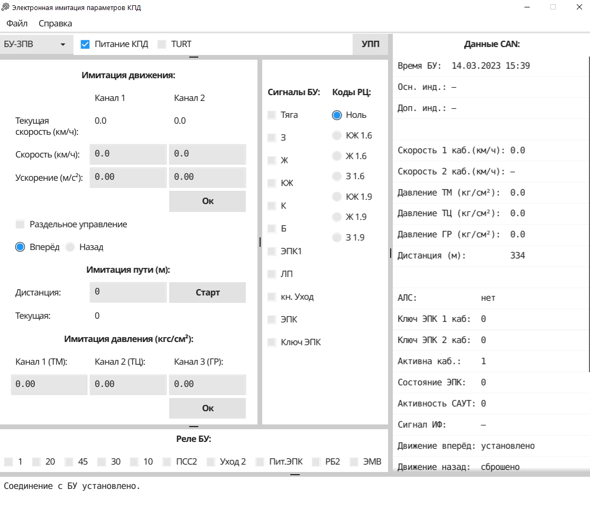

|
Программа позволяет имитировать параметры КПД и отображает ответную реакцию блока управления (далее – БУ).
Внимание!
Использование программы при запущенных процессах, имеющим доступ к ресурсам ИПК или CAN (такие как TestSRS2),
приведет к возникновению критических ошибок в работе программы.
После закрытия программы происходит деинициализация канала CAN. При запуске двух окон программы и последующем закрытии одного из них
произойдет закрытие канала CAN в оставшемся окне.
При повторном запуске программы, происходит проверка процесса деинициализация CAN,
если процесс обнаружен, запуск программы будет ожидать его завершения.
Начало работы
Подключите CAN адаптер к персональному компьютеру, к ИПК-3.
Подключите ИПК-3 к персональному компьютеру.
Подключите БУ к ИПК-3, используя кабель с автоматическим управлением питания БУ. Включите питание БУ.
Перейдите в режим поездки нажатием кнопки «ДАТА/П» на БУ, блоки БУ-3П, БУ-3ПА, БУ-3ПВ самостоятельно
переходят в режим поездки при включении питания блока, если с момента их предыдущего включения прошло менее минуты.
Запустите программу. После загрузки программы выберите нужный тип БУ из выпадающего списка в верхней части окна.
После запуска программы с БУ считываются условно-постоянные признаки (далее – УПП).
Если программа не смогла их получить по CAN, будет выведена ошибка, а признаки будут считаны из внутреннего файла конфигурации,
где находятся значения, которые были записаны на БУ при последней проверке.
Для управления питанием КПД и сигналом TURT используйте чекбокс с соответствующим названием.
Для БУ-4 вместо сигнала TURT отображается чекбокс «Режим обслуживания». Он выполняет ввод пин-кода
(вход в режим обслуживания для изменения настроек БУ-4) и не требует выключения блока. Для выхода из режима обслуживания следует перезагрузить БУ-4.
В нижней части окна программы находится статусная строка, на которой отображаются статус выполнения имитации, ошибки или подсказки.
Во время имитации движения или пути переход в режим обслуживания или запись УПП невозможна (соответсвующие кнопки неактивны).
Аналогично в режиме обслуживания невозможно запустить имитацию движения, пути.

Рисунок 1
Установка условно-постоянных признаков (УПП)
Нажмите кнопку «УПП». В открывшемся окне появится список УПП.
Текущие значения УПП считываются с БУ
при загрузке окна и доступны для редактирования. Скорректируйте значения УПП, проверьте, что значения
находятся в допустимых пределах. Установите чекбокс «Управлять питанием» (если БУ заранее не был переведен в режим обслуживания),
нажмите кнопку «Записать». Данные будут записаны в БУ и сохранены во внутренний файл конфигурации.
Значения УПП, сохраненные во внутреннем файле конфигурации (значения, которые были записаны на БУ в последний раз),
можно получить, нажав кнопку «Сохранённые УПП» в нижней области окна.
Текущее значение УПП с БУ можно получить, нажав кнопку «УПП БУ».
Данные CAN
Программа получает данные по каналу CAN.
Основные параметры сформированы в список, который находится в правой части окна.
Если на данный момент программа не получает данные о параметре, в его строке будет стоять «-».
Если на данный момент в БУ установлена ошибка, её код будет отображаться в сформированном списке.
Кликните по строчке с кодом ошибки для того, чтобы в статусной строке отобразилась ее расшифровка.
Имитация движения
Для установки скорости и ускорения введите значение параметра в соответствующее окно и нажмите «Enter».
Для установки всех значений на все доступные каналы нажмите кнопку «Ок». Для остановки имитации нажмите «Стоп».
Если чекбокс «Раздельное управление» установлен, можно установить разные значения скорости и ускорения для каналов 1 и 2.
Если чекбокс не установлен, то значение, вводимое в окне «Канал 1», дублируется в окне «Канал 2» (и наоборот) и устанавливается сразу на оба канала.
Кнопка «Ок» устанавливает значения скорости и ускорения по двум каналам с учетом направления.
Скорость, установленную на БУ в текущий момент времени, можно увидеть в поле «Текущая скорость» и «Данные CAN».
Если программа не получает значение параметра в текущий момент, в соответствующей строке отображается «-».
Для установки направления движения используйте переключатель с пометками «Вперёд» и «Назад».
При смене направления в поле «Данные CAN» в строках «Движение вперёд» и «Движение назад» меняется значение.
Для имитации движения используются установленные на БУ в текущий момент параметры: число зубьев ДУП и диаметры бандажей колёс.
Если их значения нужно изменить, установите УПП БУ.
Имитация пути
Введите дистанцию, установите значение скорости, нажмите кнопку «Cтарт» (счетчик обнуляется и готов считать импульсы скорости).
Текущая позиция (пройденное расстояние) будет выведена в поле с пометкой «Текущая».
Для остановки имитации нажмите «Стоп».
Общая пройденная дистанция с момента включения блока отображается в поле «Данные CAN».
Имитация давления
Введите значение давления в диапазоне, допустимом для выбранного канала, нажмите «Enter» для установки давления. Для установки всех
значений на все доступные каналы давления нажмите кнопку «Ок».
Установленное на БУ значение отображается в поле «Данные CAN».
Двоичные сигналы
Выберите двоичный выход БУ, установив соответствующий чекбокс в поле «Сигналы БУ».
Некоторые установленные на БУ сигналы («Тяга», «АЛС», «ЭПК») можно контролировать в поле «Данные CAN».
Выберите код рельсовой цепи, установив соответствующую кнопку-переключатель в поле «Коды РЦ».
Установленный сигнал можно контролировать в поле «Данные CAN» в строке «Сигнал ИФ».
В поле «Реле БУ» отображаются выходные сигналы БУ. Их установка ни к чему не приводит.
|